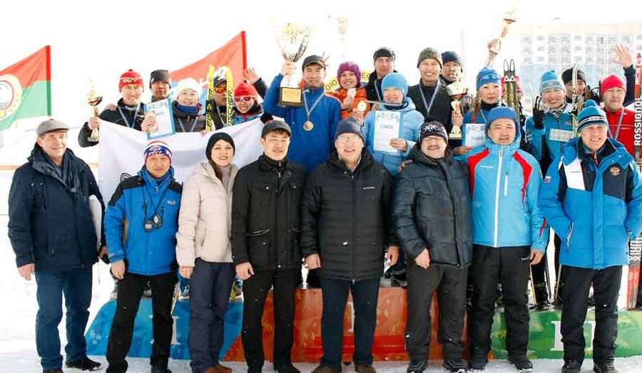

ИА SakhaNews. 25 марта на стадионе «Туймаада» в Якутске состоялись II эстафетные лыжные гонки среди трудовых коллективов на Кубок Федерации профсоюзов РС(Я). Участие в них принимали 14 команд. Лыжников приветствовали председатель Федерации профсоюзов республики Николай Дегтярев, президент Федерации лыжных гонок республики Семен Иванов, главный судья соревнований Альберт Трофимов и замруководителя управления по физкультуре и массовому спорту Минспорта РС(Я) Андрей Игнатьев.
Председатель Федерации профсоюзов республики Николай Дегтярев встретился с участниками IV Всероссийской спартакиады трудящихся — с семьями Лукиных и Федоровых. Путевку на участие во Всероссийской спартакиаде семьи получили в мае этого года, став победителями в республиканском конкурсе «Папа, мама, я – спортивная семья», проведенной Федерацией профсоюзов республики.